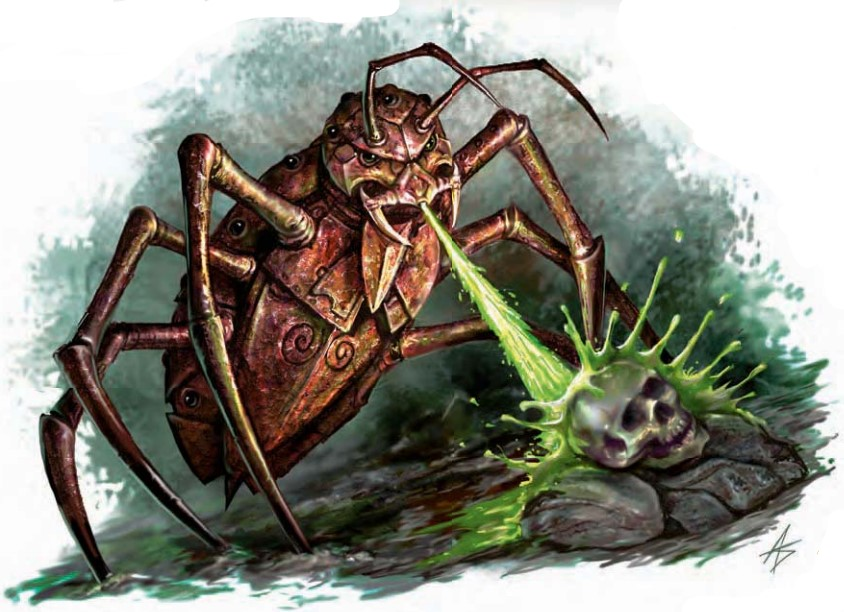

正在地面上咀嚼着什么的是一只和大型犬一样大小的，呼呼作响急行着的金属虫子。它身体上点缀的玻璃眼珠同时观察着所有方向，锐利的螯爪插入地面，向一些岩屑喷出一股强酸。
| 资料栏位 | 时械蟑螂 小型构装生物 |
|---|---|
| 生命骰 | 1d10+10（15HP） |
| 先攻 | +3 |
| 速度 | 30尺（6格）；攀爬30尺 ，挖掘20尺 |
| 防御等级 | 14(+1体型，+3 敏捷)，接触14，措手不及11 |
| 基本攻击/擒抱 | +0/ -4 |
| 攻击 | 近战 螯爪+1(1D4) |
| 全力攻击 | 近战 2螯爪+1(1D4) |
| 面宽/触及 | 5尺/ 5尺 |
| 特殊攻击 | 喷吐武器 |
| 特殊能力 | 黑暗视觉60尺，昏暗视觉，颤动感知60尺，构装生物免疫，构装体特性 |
| 豁免 | 强韧+0，反射+3，意志+0 |
| 属性 | 力量11，敏捷17，体质 ― ，智力 ―，感知11，魅力10 |
| 技能 | 攀爬+8，躲藏+7，聆听 +0， 侦查+0 |
| 专长 | ― |
| 环境 | 见后文（未翻） |
| 组织 | 见后文（未翻） |
| 挑战等级 | 1 |
| 宝物 | 无 |
| 阵营 | 总是绝对中立 |
| 进化 | 2-3HD（小型） |
| 等级调整 | ― |
时械蟑螂是为清理地下城，工作室或者类似场所而被设计出的自动机械。时械蟑螂由命令护符控制，通过这种护符使用者可以对其下达简单的指令。
战斗作为无心智构装体，时械蟑螂只能实行有限的，预先设定好的战术。时械蟑螂只会在自卫时，或某生物在它被命令清理的范围内时才会攻击。除此之外，它会尽量使用自己的喷吐武器。而在重新装填强酸时使用自己的螯爪。时械蟑螂也会用强酸在它与它的目标之间的障碍物上打出通道。
喷吐武器（Su）：30尺线型，5轮一次，3D4强酸伤害，反射DC14减半。豁免DC包括+4种族加值。
技能：时械蟑螂在攀爬检定上有+8种族加值，并且总是可以选择在攀爬检定中取10，即使是在匆忙或是被威胁的情况之下。
在知识（神秘）上有级数的人物可以更多地了解时械蟑螂。当人物成功通过技能检定时，以下知识将被揭示，其中包括了更低DC的信息。
| 知识（神秘） | 结果 |
|---|---|
| DC 11 | 这种生物是时械蟑螂，一种缺乏独立思维的无心智构装体。这个结果揭示了其所有构装生物特性。 |
| DC 16 | 时械蟑螂是装备了魔法装填的强酸储存器的，坚固的虫形自动机械。它的强酸可以射出30尺。 |
| DC 21 | 时械蟑螂可以钻入岩石与泥土，并且可以用和步行一样的速度攀爬。 |
| DC 26 | 时械蟑螂的硬壳里包含了容纳命令护符的空间。当命令护符就位时，时械蟑螂可以被控制。 |
作为无心智的构装体，时械蟑螂只会执行有限的、预设好的战术。一只时械蟑螂只有在自卫时，或者有生物进入它被指令清理的区域时才会发动攻击。无论哪种情况，它都会尽可能频繁地使用喷吐武器，在重新积蓄酸液储备期间则用螯钳攻击。时械蟑螂也会利用酸液在自身与目标之间钻穿障碍物。
"到目前为止，我控制这只愚蠢小东西的所有努力都失败了。显然其中还有某些我尚未解开的奥秘。只要它只是在清除地下城里的垃圾，我就不担心。但如果它哪天认定我的魔宠是垃圾――或者我是......显然，需要进一步研究。"――英加拉・阿斯泰里安（Ingalla Asterian），机关师的最后一篇日记
遭遇范例时械蟑螂最常见于地下建筑群中，通常以最多六只为一组的清洁小队出现。成群的时械蟑螂会涌向下层位面的战场，对粗心的旅行者构成威胁。
守卫（EL 1）：一只时械蟑螂可以被编程为攻击它看到的任何东西，或者攻击任何没有提供认可信号或密码的生物。EL 1示例：一只时械蟑螂守卫着一个强盗洞穴的入口。它从不离开入口超过30英尺，也不会进入洞穴或攻击洞穴内的任何东西。它会忽略任何说出密码"肉桂"（Cinnamon）或用仅两根手指挥手示意的生物，除此之外会攻击任何移动的东西。
清扫（EL 2-6）：在外层位面的战场上，时械蟑螂会将旧日战斗的残留物彻底清除，让战场恢复如新，为下一次战斗做准备。EL 6示例：在阿喀隆无尽的战场之一，散落着成千上万兽人和地精的残骸，它们在无休止的战争中反复被杀。战争早已转移，但发臭的尸体堆依然存在。六只时械蟑螂缓慢地穿过该区域，对一切喷洒酸液，直到将尸体、破损的武器和其他垃圾全部降解为洁净的土壤。它们将所有东西视为需要处理的垃圾，并攻击任何进入范围内的生物。如果某名对手存活超过1轮，就会成为全部六只时械蟑螂的焦点，它们会将所有酸液对准这堆麻烦的"垃圾"。
生态时械蟑螂是无心智的构装体。它们不进食、不睡眠、不呼吸。作为工具而存在，只为被设定的目的而运作。从被制造出来的那一刻起，直到彻底散架，它们始终遵循自身的程序。每只时械蟑螂在制造时都配有一枚命令护符。这枚小巧的圆形金属盘嵌入它背甲上一个凹陷处――该凹陷带有脊纹，刻满了细小的符文。
环境尽管时械蟑螂可能出现在任何地方，但它们最初是由异位面指挥官们建造的，用于清扫从永恒敌人手中夺来的战场。
典型特征时械蟑螂长4英尺，宽1.5英尺。八条细长的金属腿使其离地约1英尺高。足部排列着微小的钩爪，使其能够掘入地面或攀墙而行。玻璃制成的眼睛随机分布在身体各处。它会持续发出轻微的嗡鸣声，如同高速旋转的轮子。大多数时械蟑螂由黄铜或青铜制成，但也有少数遭遇记录显示存在钢或铁制的个体。
阵营作为无心智的自动机械，时械蟑螂总是绝对中立。
典型宝藏时械蟑螂不携带或储存任何类型的宝藏。不过，一只带有命令护符的时械蟑螂价值2,150金币。
关于玩家角色时械蟑螂由金属板壳包裹着精密齿轮与其他机械元件制成，材料总成本为75金币。制造躯体需要通过DC 14的工艺（锻造）检定。可以制造生命骰数超过1的时械蟑螂，但每增加1个生命骰，成本增加2,000金币。制造费用已包含为该时械蟑螂调谐的命令护符的材料。护符是时械蟑螂的一部分，而非一把机械钥匙。它不可被摧毁，也不能绕过护符的功能、在没有护符的情况下对时械蟑螂进行编程。施法者等级：4级；制造要求：制造构装体、秘法眼、马友夫强酸箭、传讯术；价格：2,150金币；成本：1,075金币 + 80点经验值。
时械蟑螂在费伦时械蟑螂首次出现在兰坦（Lantan），是贡德（Gond）的奇迹制造者们的产物。关于它们实用性的消息迅速传播开来，如今在剑湾各地都能找到时械蟑螂。大多数由富商购买，但也有少数无意中通过过往船只的货舱迁移到了大陆。传说有探险家在楚尔特的丛林中释放了海量的时械蟑螂，希望为前往新发现的废墟开辟一条道路。实验失败了，如今这些生物在这片土地上漫游，同样热衷于吞噬旧垃圾与无价的历史文物。
时械蟑螂在艾伯伦时械蟑螂被认为与机关人同时期被开发出来，可能作为后者的辅助者而存在。哀伤故地中仍然有许多时械蟑螂，有些机关人将时械蟑螂当作宠物饲养。某些机关师也会将时械蟑螂制作为魔宠构装体（《艾伯伦魔法》第151页）。一只魔宠构装体时械蟑螂需要额外添加一品脱创造者的血液作为材料。它拥有10点智力值、武器娴熟专长（使其近战攻击加值提升至+4）以及+4的侦查检定加值。它没有命令护符。